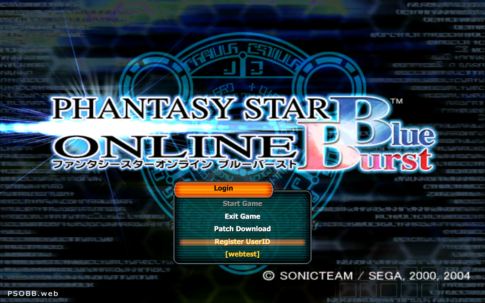
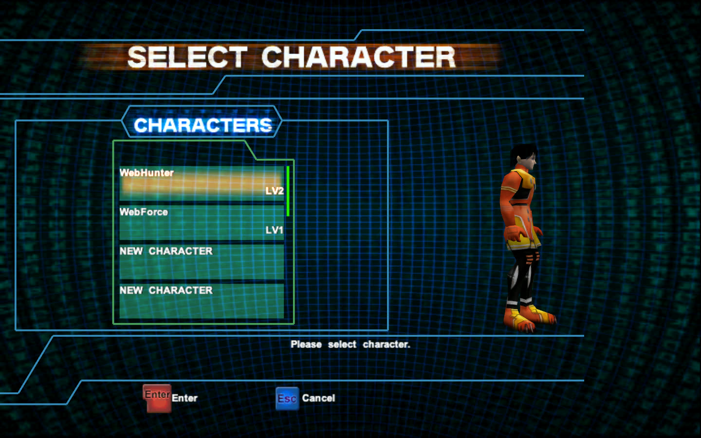
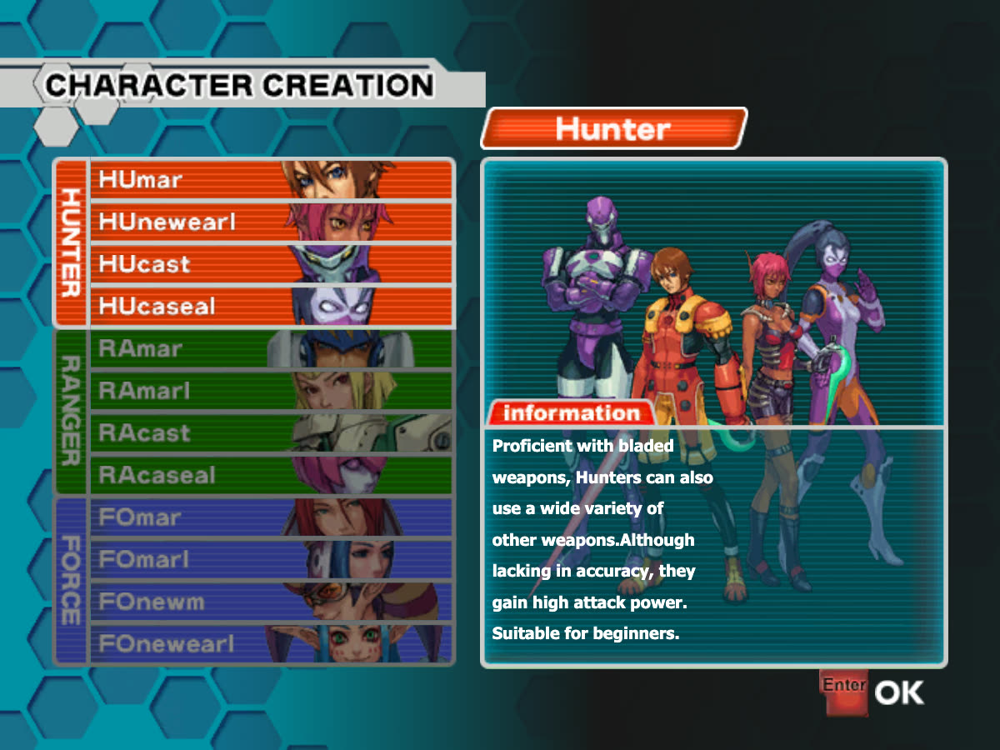
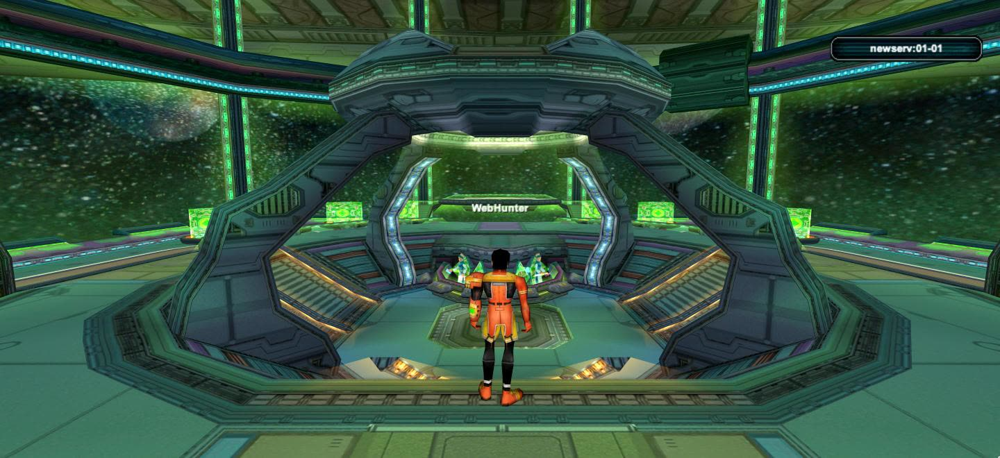
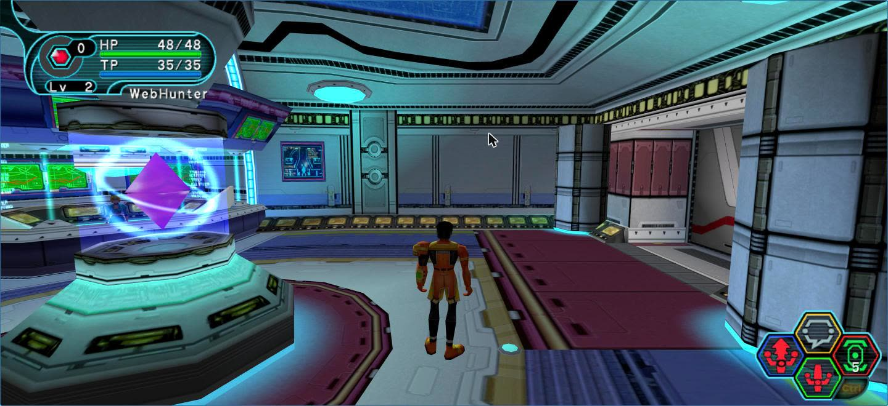
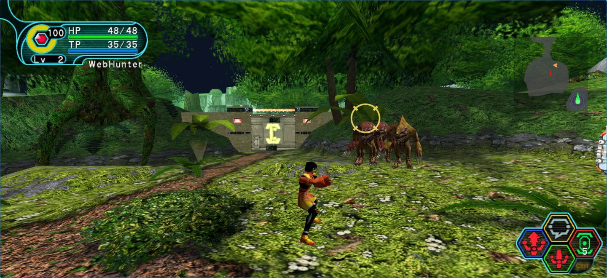
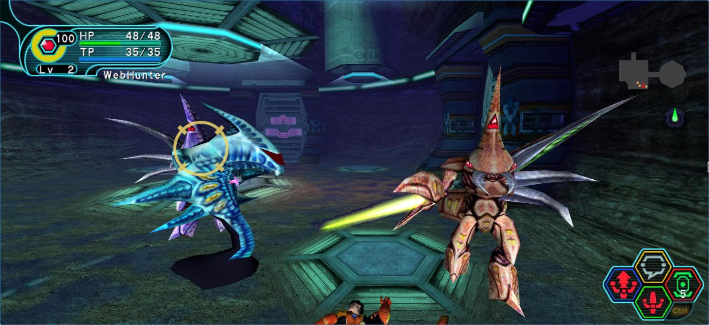
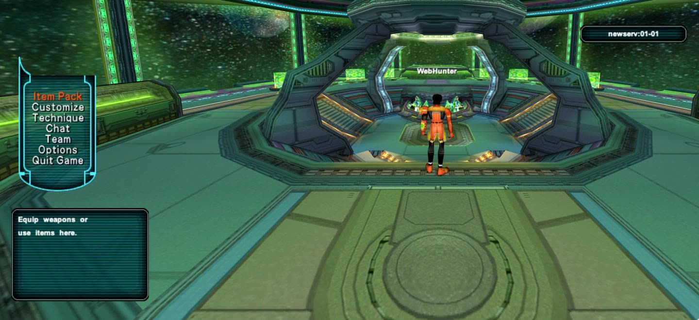
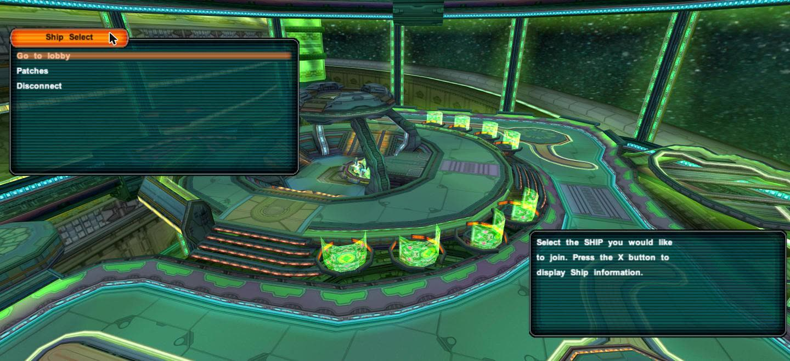

A fan-made client for PSO Blue Burst, written in TypeScript and three.js. It reads your own game files in the browser and plays online against a newserv server. Screens, menus, enemies and rules are rebuilt from the original client's code, not by eye.
Screens









How it works
- Browser client: parses the game's own formats (PRS, GSL, AFS, REL, XJ / NJ models, XVM textures, motions) and draws them with three.js.
- Online: a small bridge turns WebSocket into TCP, so the browser speaks the real Blue Burst protocol to newserv.
- Faithful: every value comes from the client's reverse engineering (a Ghidra dump and a byte-matching decompilation), with the address cited in the code.